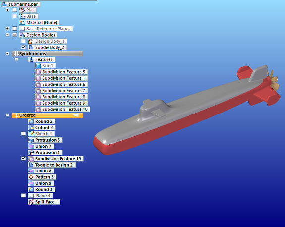
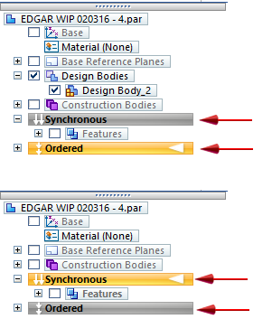
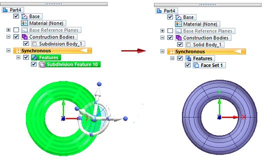
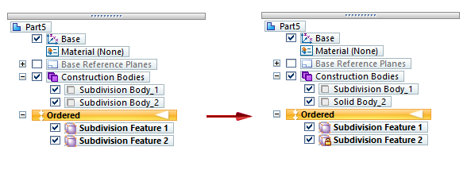
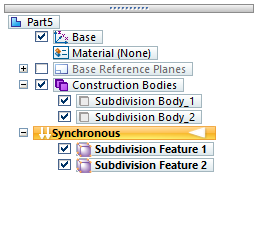
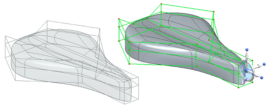

Working with subdivision features
Using hybrid modeling mode to edit subdivision features
When you exit the Subdivision Modeling environment, the subdivision model is listed in PathFinder as a subdivision feature, with one or more construction bodies. If multiple cages exist, a subdivision body feature for each cage is added to the Construction Bodies collector.

If you were working in the Ordered environment, the construction bodies will behave as any other bodies and can be modified by other features. If you return to the Subdivision Modeling environment to edit the subdivision feature, any dependent features will recompute when you return to the modeling environment.
If you were working in the Synchronous environment, the resulting subdivision feature can be edited in the Subdivision Modeling environment, but no synchronous features can be applied to the resulting bodies. If you want to modify these bodies outside the Subdivision environment, you can use a hybrid modeling approach. Change to the ordered modeling mode, as described next, and then apply edits to the subdivision body using ordered features.
This video shows how you can add finishing features to a subdivision model using hybrid modeling mode.
Moving between synchronous and ordered modeling mode
You can easily switch between synchronous and ordered modeling modes by doing any of the following:
Right-click in PathFinder or the graphics window to activate the shortcut menu, and then choose either Transition to Synchronous or Transition to Ordered, depending on the environment that is active.
If a model contains both synchronous and ordered features, click the orange Ordered environment bar or the Synchronous environment bar in PathFinder.

On the ribbon, from the Tools tab→Model group, choose the modeling environment to transition to.
Making subdivision features available for downstream use
You can disconnect the subdivision feature from its parent cage, so it cannot be edited as a subdivision feature anymore, but it can be used in other applications.
In Synchronous mode, right-click the subdivision feature name in PathFinder, and select the Break command on its shortcut menu. For more information, see Break a feature into faces.
In PathFinder, the name of the subdivision body changes to a regular body name to reflect the link to the cage is disconnected.

In Ordered mode, use the Drop Parents shortcut command. For information, see Drop the parents on a feature.
In Ordered mode, this detached body acts like any other imported body or Part Copy that had its link to the parent part broken. The feature name does not change but its icon updates to show the padlock symbol, indicating the feature link to the cage was broken.

Copying subdivision features
You can copy and paste subdivision features outside the Subdivision Modeling environment, in both Ordered and Synchronous mode. The entire feature is copied as a new Subdivision Feature in PathFinder.
Copying Subdivision Feature 1 copies the body and the cage, and pastes it as a new Subdivision Feature 2, which can be edited.
In Synchronous mode, the steering wheel is displayed to allow it to be moved. In Ordered mode, the body can be moved with direct edit commands, if needed.


You can store commonly used subdivision shapes in the Feature Library to make them readily available. When adding a subdivision shape to another model, its location can be defined in Synchronous mode, but the feature is placed in the original location automatically in Ordered mode.
How do I
Subdivision Modeling workflowMove cage elements
Move using Quick Move
Use symmetric mode in Subdivision Modeling
Scale a subdivision model
Split subdivision model faces
Split faces with offset
Offset cage faces
Connect cage faces or edges with a bridge
Delete and fill cage faces
Align a shape to a curve
Learn more
Introduction to Subdivision ModelingUsing PathFinder with subdivision models
Working with cage elements
Creating subdivision features
Moving and rotating cage elements
Look up more details
Subdivision Modeling commandBox command in Subdivision Modeling
Box command bar
Cylinder command in Subdivision Modeling
Cylinder command bar
Sphere command in Subdivision Modeling
Sphere command bar
Torus command
Torus command bar
Scale command in Subdivision Modeling
Blend command
Show Blend Values command
Split command
Split with Offset command
Bridge command
Align to Curve command
Cage Style command